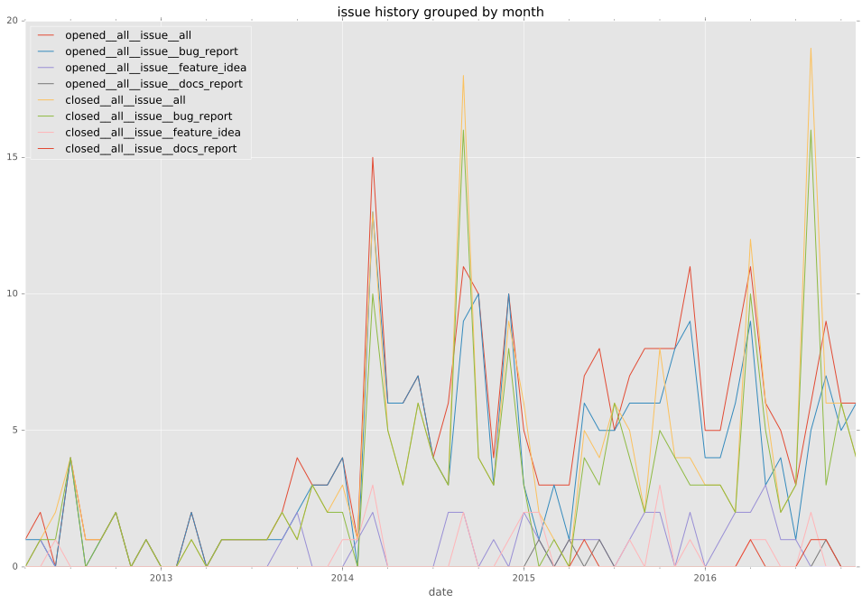
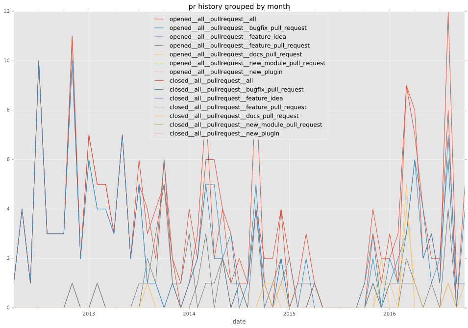
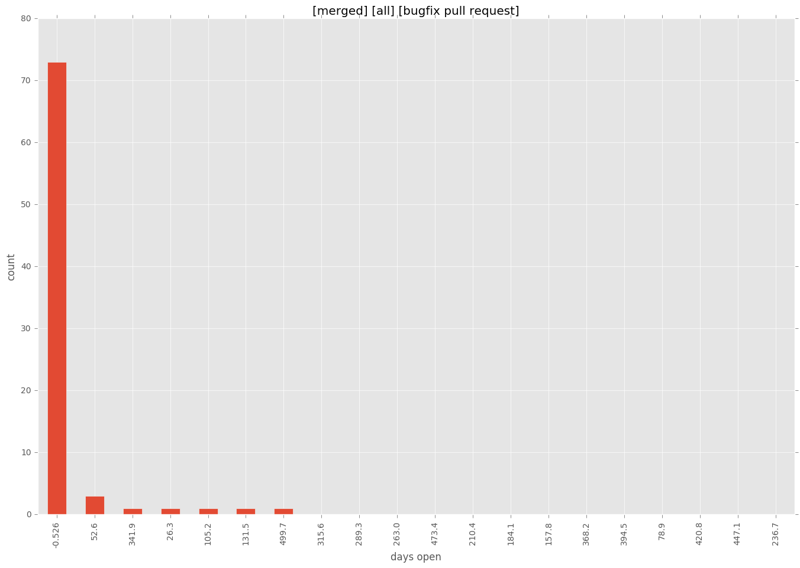
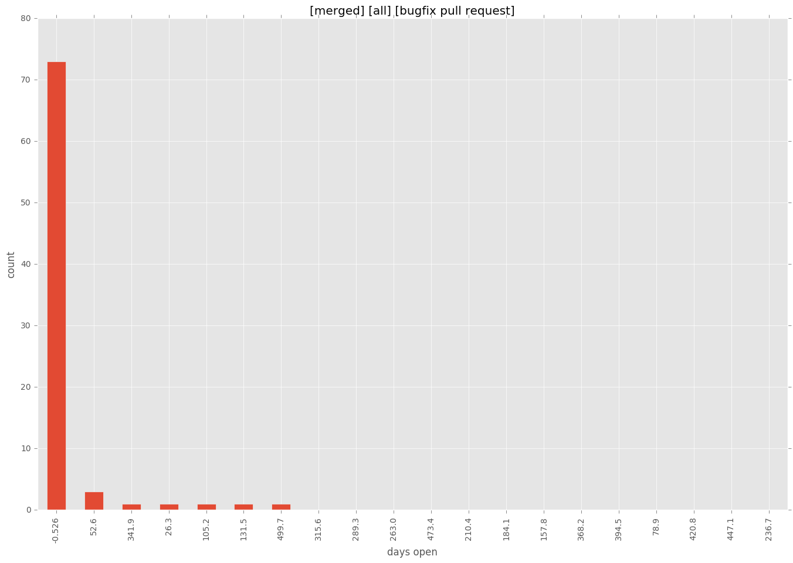

total issue counts
unknown: 2
feature pull request: 36
docs report: 5
pullrequest: 180
docs pull request: 12
bugfix pull request: 130
feature idea: 15
issue: 119
bug report: 99
issue history


days open by issue type
bugfix pull request
count: 203
std: 71.1383149551
min: 0
max: 526
median: 0.0
mean: 19.0591133005
all
count: 373
std: 109.873727904
min: 0
max: 652
median: 1.0
mean: 41.1286863271
pullrequest
count: 0
std: nan
min: nan
max: nan
median: nan
mean: nan
docs pull request
count: 21
std: 13.4149880642
min: 0
max: 44
median: 2.0
mean: 7.52380952381
docs report
count: 5
std: 191.160142289
min: 0
max: 447
median: 10.0
mean: 119.8
feature pull request
count: 46
std: 92.2464353291
min: 0
max: 381
median: 16.0
mean: 61.8695652174
feature idea
count: 12
std: 208.534060876
min: 0
max: 582
median: 28.5
mean: 132.5
issue
count: 0
std: nan
min: nan
max: nan
median: nan
mean: nan
bug report
count: 83
std: 159.29815856
min: 0
max: 652
median: 5.0
mean: 75.5903614458
closures grouped by total days open

 
